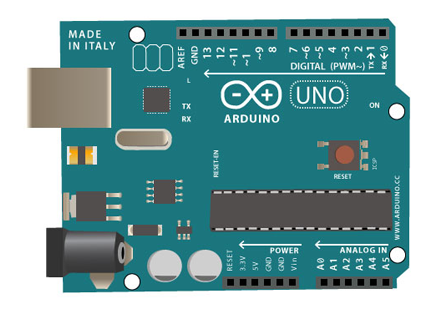

An open-source framework for connecting sensors to the internet.
Program the real world
with any
Arduino
- Connect really cheap and effective sensors to the Arduino
- Run everything at the same time with no delay
- Do it fast in microsecond response times